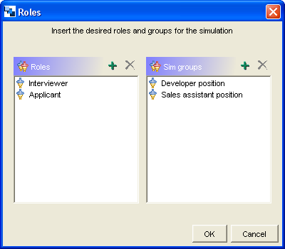

Pautas para la particularización, instanciación y
ejecución
Particularización del patrón en un Diseño de
Aprendizaje:
- En la paticularización, varias tareas deben ser
realizadas: determinar el número y nombre de los roles y grupos
de simulación; esto se hace después de elegir este CLFP:

- A continuación, definición de los objetivos y los
prerrequisitos,
especificación de las actividades tanto del profesor como de los
alumnos (definición del tema de la lluvia de ideas, etc.),
creación de los recursos necesarios (contenidos y herramientas)
y configuración de la completitud de las actividades (por
ejemplo, control de tiempo).
Instanciación del Diseño de Aprendizaje basado en el
CLFP Simulación:
- En la instanciación, diversas tareas deben ser realizadas:
asignación de personas a roles y grupos de simulación.